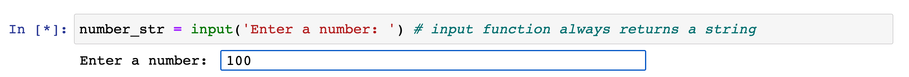

Converting Strings and Floats and Integers¶
You can convert objects of some data types to other data types in Python. It’s not always the case as we will see. Here we will show some examples of how to convert between strings, integers, and floats.
First we will define the number 1 as a string.
x_str = '1'
print(x_str)
print(type(x_str))
print(x_str + x_str) # string concatenation. That's why we get 11 and not 2.
1
<class 'str'>
11
Since the string x_str is a number, we can convert it to
an integer object by using the int() function.
# to convert the variable x_str to an integer object
x_int = int(x_str)
print(x_int)
print(type(x_int))
print(x_int + x_int) # integer addition of 1 + 1 = 2
1
<class 'int'>
2
print(type(x_str))
<class 'str'>
Note that the underlying object for the variable x_str will still be a string.
It’s just that we took that string object and converted it into
a new integer object and assigned it to x_int. But this did not
change the object type for x_str because it’s still a string.
To convert an object to a float we can use the float() function.
y_int = -2
y_float = float(y_int)
print(y_float)
print(type(y_float))
print(y_float * y_float)
-2.0
<class 'float'>
4.0
# convert float back to int
print(int(y_float))
print(type(int(y_float)))
-2
<class 'int'>
# y_float is still a float though
# because we did not change it
print(type(y_float))
<class 'float'>
When we convert a float to an integer,
the int() function will take whatever number is
left of the decimal to be the integer. That is,
it always rounds down. int(5.99) would be the integer object
5.
pi = 3.14159
# int wrapped around a float will
# always round the float down to nearest integer.
print(int(pi))
3
str(pi) + str(pi) # string concatenation
'3.141593.14159'
pi_str = str(pi)
print(pi_str)
3.14159
float(pi_str)
3.14159
# can't convert a string that is a decimal number to an integer.
# int() function expects an integer string or a float,
# but not a float string.
int(pi_str)
---------------------------------------------------------------------------
ValueError Traceback (most recent call last)
<ipython-input-11-0b80ce9aac36> in <module>
2 # int() function expects an integer string or a float,
3 # but not a float string.
----> 4 int(pi_str)
ValueError: invalid literal for int() with base 10: '3.14159'
int('a') # of course you can not convert an letter character to an integer
---------------------------------------------------------------------------
ValueError Traceback (most recent call last)
<ipython-input-12-cd545b3c6bb5> in <module>
----> 1 int('a') # of course you can not convert an letter character to an integer
ValueError: invalid literal for int() with base 10: 'a'
The above code cells are supposed to give
you some ideas of how to use str(), int(), and float()
functions to convert between string, integer, and float data types.
If you are ever unsure, just try it out! That is the beauty of interactive Python.
You can just type a simple example and see if it works.
Here is one more example
using the input() function. As mentioned earlier,
we have to provide a screenshot because
the input() function can not be displayed properly
within this book.

# if you got this from the input
# you can remove this line directly below.
number_str = '100'
print(number_str)
print(type(number_str))
# convert to an integer so we can do integer add below.
number_int = int(number_str)
print(f'The number {number_int} plus 5.94 is {number_int + 5.94}')
100
<class 'str'>
The number 100 plus 5.94 is 105.94